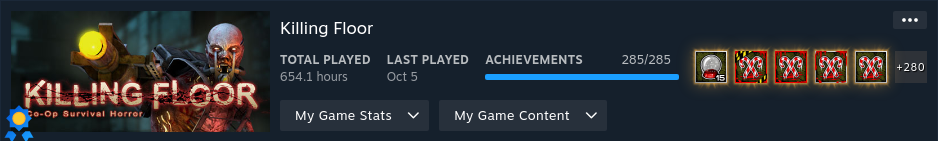

Why Killing Floor?
I started playing Killing Floor all the way back in 2011, which is what brought me to Steam in the first place. This was right after high school, and I had been introduced to a group of friends through a mutual friend. Killing Floor was the first game that we all had in common that we put the most time into. Thought out the entire friendship, until the day it ended in 2016, Killing Floor was a game that we always ended up going back to. Even when the game got stale, we found ways to make it more interesting, as the community was filled with mod makers.
Gameplay & Mechanics
Killing Floor is a first-person shooter, wave-based survival game. The settings for the game is a post-apocalyptic London, overrun by Zeds. A company, Horzine Biotech, was contracted by the military to research genetic manipulation and cloning. I'm sure you can understand the rest of the plot, that's essentially as deep as it gets. You're summoned by the British government as a member of the British army to contain the outbreak, and stop the Patriarch.
Overview
Killing Floor has a simple premise. You spawn into a map with a pistol, and you kill Zeds to earn money. Once you kill all the zeds in a way, a trade opens up for 60 seconds, and you can upgrade your gear. After each wave, more, and harder enemies will spawn with various abilities and strategies to take them down. If you make it to the final wave, you face off against the Patriarch, the father of all zeds. Defeat him, and you've beat the stage! Choose from four different difficulties, and you have enough to push yourself into getting better.
Zeds
Killing Floor has ten different enemies. Clot, Gorefast, Crawler, Bloat, Stalker, Husk, Siren, Scrake, Fleshpound, and the Patriarch The clot, gorefast, and crawler are your basic enemies. The clot slowly walks towards you, while the gorefast runs towards you with a blade on his arm, and the crawler crawls on the ground and jumps towards you. The bloat is a slow-moving abomination filled with bile, who throws up acid on you, while the stalker is a fast-moving invisible enemy who will claw at you. The husk shoots fireballs at you, while the siren screams at you, ignoring armour and doing damage to your character only. The scrake has a chainsaw for an arm and will run at you when enraged at 50% health, while the fleshpound will enrage if he has eyes on you for a period of time. The scrake and fleshpound are both considered mini-bosses who have the highest likelihood of ending your game. Finally, the Patriarch is the final boss. He sports a missile launcher and chain-gun on his arm, as well as cloaking technology. If he sees you, he'll run at you and almost one shot you, shoot his chain-gun at you, or just end you with a massive missile. After you take out 33% of his health, he'll run away and heal; he does this three times before he stops, and you can kill him. It's not a very balanced encounter, however, as you can stack explosives, killing him in less than a second – something not carried over to Killing Floor 2.
Perks
Killing Floor has seven different classes, all of which can be levelled up to six by doing various class-specific tasks. Berserker, Commando, Demolitionist, Field Medic, Firebug, Sharpshooter, and Support Specialist The berserker specializes in melee weapons and armour resistance, which field medic specializes in healing. Commando specializes in machine guns, which support specializes in shotguns. Demolitionist specializes in explosives, while firebug specializes in fire. Finally, the sharpshooter specializes in doing massive damage upon getting a headshot. Each perk can do something different for the team; however, the game is not balanced, and it feels like an afterthought. For example, the scrake resists explosives, while the fleshpound resists headshots. To kill a scrake, you can do massive headshot damage, while the fleshpound takes extra damage to explosives. You would assume you would use a sharpshooter to take out scrakes, and demolitionist to take out fleshpounds, right? Well, you totally can. However, support specialists can do both, with no added risk. Meanwhile, the firebug and commando do nothing aside from take out basic enemies, something all classes can do by default. The field medic is essentially invisible, and can do anything with any weapon, given enough time. Once Killing Floor 2 came out, any hope of getting a balanced game was over, and was left to the community, which has done a wonderful job at balancing the game through the ScrN balance mod.
Core Gameplay Loop
What's the main draw of Killing Floor if it seems so unbalanced in both the enemies and weapons? Well, the game is brutally difficult, even on the second easiest difficulty. You wouldn't know about these unbalanced parts of the game unless you've played it long enough to learn about them because they aren't obvious. Over the years, they've also released a ton of maps, totalling 37 official maps. The number of maps in combination with thousands of custom maps from the community leave you a lot of variety and things to learn about the game. Couple that with multiplayer among friends, or other players online, you have countless hours to try something new. While the game may be unbalanced, the fact that you can play with other people allows you to enjoy these classes while still being able to win, and fill a role. I've met some funny, and amazing people on Killing Floor over the years. People who have taught me all about these exploits, and strategies to beating certain popular maps. Learning that, and sharing it with the new players who still play to this day, is a rewarding experience.
Final Thoughts
Killing Floor will always hold a special place in my heart. The amount of charm the characters and scenery has, mixed with the core gameplay, you can easily squeeze 500 hours out of this now very cheap game. It often goes on sale for 2 to 5 CAD, allowing you to buy it for your friends as well. Levelling up your perks, and trying out what works on each map is a fun experience, and I suggest doing so without looking up too much. The game is completely solved since it's been out since 2004, so you can beat every map without trying too hard, knowing the strategies. I whole heartily recommend playing Killing Floor solo, with random people online, and especially with your friends.
Should you complete Killing Floor?
With how much I've praised the game, my answer, in 2023, is probably not. Killing Floor has a massive number of achievements, and they weren't created in a friendly way. Completing a map on the hardest difficulty does not unlock the achievement for the other three difficulties. This is the main reason I have so many hours in the game because I had to do every single map four times, minimum. Any map, solo, can take 20 to 35 minutes. With 37 maps to beat four times, you can imagine how long that would take. On average, that's 67 hours, which may not seem like a lot, but it becomes tedious, which is not what you want a game to become. If you can find a way to play this 20-year-old game with people online, or a friend group, I'd say go for it. If you have an emotional attachment to Killing Floor in some way, I'd say go for it. As a stand-alone game you just happen to have in your library? Probably not.
Stats Gallery
Complete!
